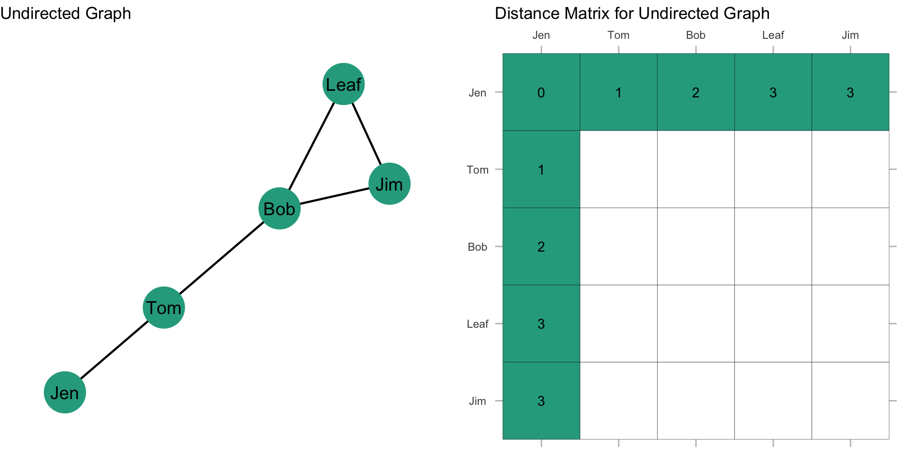
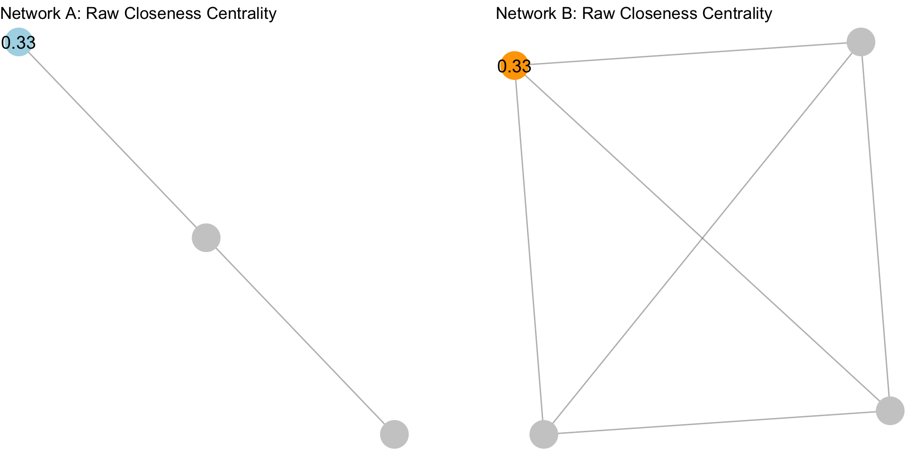
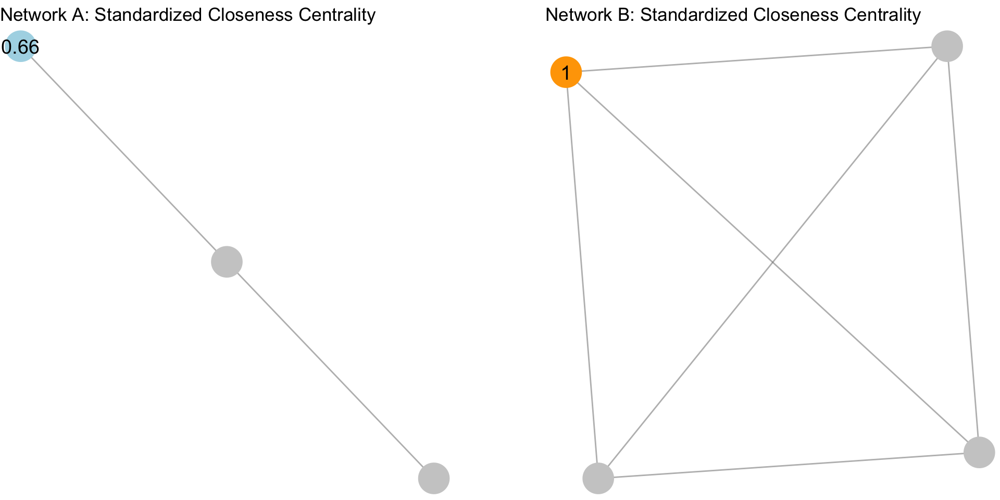
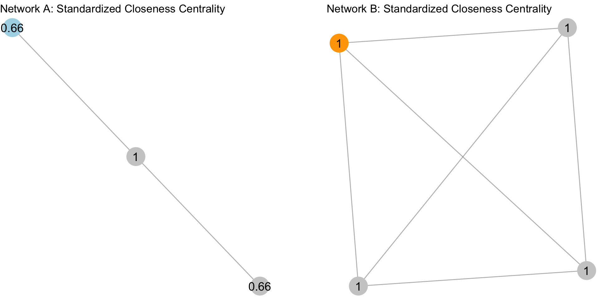
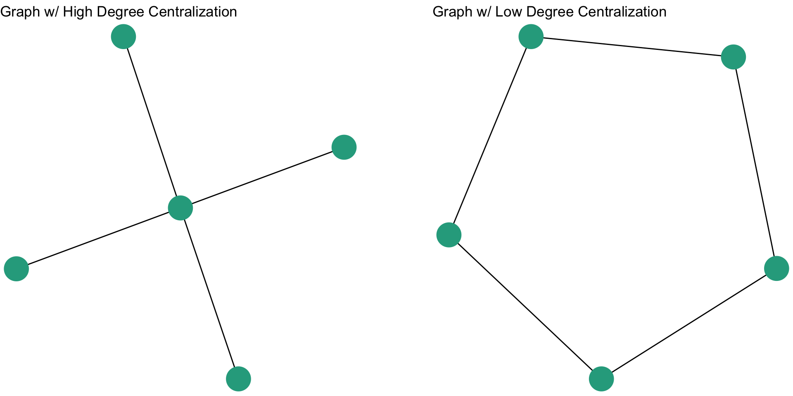

Closeness Centrality
In the prior chapter, we examined the idea of “centrality” for nodes and “centralization” for graphs, focusing attention on the conceptual aspects of what it means to be central as well as the ways in which we can operationalize the concept using degree centrality. In this chapter we want to continue thinking about what it means to be central, but through a different conceptual lens: closeness. As a crime analyst, examining closeness centrality can provide crucial insights into the efficiency and influence of individuals within a group that may go beyond what you can glean from examining degree centrality. For instance, Bright, Hughes, and Chalmers (2015) study of drug trafficking networks illustrates how closeness centrality played a pivotal role in understanding the structure and function of illicit organizations. In this study, Bright, Hughes, and Chalmers (2015) examined an Australian drug trafficking network and found that individuals with higher closeness centrality were not necessarily the most visible or directly connected (in terms of degree centrality), but held critical positions because of their proximity to others in the network. These individuals could quickly access and disseminate information across the group, making them key actors in maintaining the flow of drugs, money, and communication. By identifying those with high closeness centrality, law enforcement was able to target individuals who had the potential to disrupt the network’s operations more effectively than simply targeting those with the most connections.
By the end of this chapter, you should be able to:
- Explain the conceptualization of “centrality” as it pertains to closeness centrality.
- Calculate closeness centrality scores for a set of nodes.
- Calculate a closeness centralization score for a graph.
Case Study: Terror Networks and Closeness
Sageman (2004) studied global Islamist terrorist networks and demonstrated how individuals with high closeness centrality played a key role in maintaining the cohesion and communication efficiency within these decentralized groups. These key players, even though they may not have had the most direct connections (high degree centrality), were crucial in maintaining the operational efficiency of the network. By targeting those with high closeness centrality, counter-terrorism efforts were able to more effectively disrupt communication channels and reduce the operational capabilities of the group.
Closeness Centrality Terms
How close is a node to other nodes? Closeness centrality measures how near a node is to the other nodes in the network. That is, how “close” the nodes are. What we mean by “close” will differ based on whether the graph is undirected or directed. But the conceptual definition is the same. How close nodes are in a graph is based on the inverse of the distance of each node to every other node.
Terminology:
- A path is an edge or sequence of edges that connect two nodes.
- A geodesic is the shortest path between two nodes.
- The distance, \(d(n_i,n_j)\), is the length of the path between i and j.
Another way of saying this is that if we know how “far apart” two nodes are (i.e. the distance), then we can take the inverse of that and know how “close” the nodes are to each other.
Undirected Graphs
Closeness Centrality
For an undirected binary graph, the closeness is:
\[C_C(n_i) = [\sum\limits_{j=1}^g d(n_i,n_j)]^{-1}\]
This reads as: Find the distance between two nodes i and j, \(d(n_i,n_j)\), sum them, and then take the inverse.
Another way to write this is as:
\[C_C(n_i) = [\sum\limits_{j=1}^g d(n_i,n_j)]^{-1} = \frac{1}{[\sum\limits_{j=1}^g d(n_i,n_j)]}\]
In words, the closeness is 1 divided by the sum of the distances (called the reciprocal).
To find the closeness centrality score, we need to first find the distances between each node. We can express these distances using a matrix, just like we did with the sociomatrix before.
Let’s take a look at this with some data. Recall our example network with Jen, Tom, Bob, Leaf, and Jim:
How far is Jen from Tom? How far is Jen from Bob? In other words, how many edges do we count in going from Jen to Tom? From Jen to Bob?
For our graph, we want to first build a distance matrix which shows the value of the geodesic (i.e. shortest path) from i to j. We can do this by looking at each node and seeing the fewest steps that are needed to reach another node. We can see that Jen can reach Tom in 1 step (i.e. \(L_{Jen,Tom}\)) and that Jen can reach Bob in 2 steps (i.e. \(L_{Jen,Tom}\) & \(L_{Tom,Bob}\)).

Since the graph is undirected, the distance matrix is symmetric about the diagonal (just like we saw with an adjacency matrix). That is, \(d(n_i,n_j) = d(n_j,n_i)\). This gives us:

Now, what about the rest of the distance matrix? If we follow what we did above for everyone else, then we get the following distance matrix:
Now, if we take the sum of the rows, this gives us \(\sum\limits_{j=1}^g d(n_i,n_j)\). Note that since the graph is undirected, the column sum would give us the same values. Since we have \(\sum\limits_{j=1}^g d(n_i,n_j)\), all we need to do now is take the reciprocal by dividing 1 by \(\sum\limits_{j=1}^g d(n_i,n_j)\):
\[C_C(n_i) = \frac{1}{[\sum\limits_{j=1}^g d(n_i,n_j)]}\]
That gives us the closeness centrality score for each individual:
| Node | Distance | Closeness |
|---|---|---|
| Jen | 9 | 1/9 = 0.111 |
| Tom | 6 | 1/6 = 0.167 |
| Bob | 5 | 1/5 = 0.200 |
| Leaf | 7 | 1/7 = 0.143 |
| Jim | 7 | 1/7 = 0.143 |
Standardization
As discussed in the prior chapter, centrality measures are sensitive to the size of the graph, g. In the case of closeness centrality, having to sum over more nodes will push scores closer to zero. Think about it: if we added more rows and columns to our distance matrix, that will increase the denominator, making the quotient smaller. This means that we can’t compare closeness centrality scores across graphs of different sizes. Solution?
Standardize! If we want to compare nodes in different sized networks, then we just take into account the number of nodes and the maximum possible nodes to which i could be connected. In an undirected graph, this is g-1.
Thus, we can calculate a standardized closeness centrality for an undirected graph as:
\[C'_C(n_i) = [\sum\limits_{j=1}^g d(n_i,n_j)]^{-1} \times [g-1]\]
For this graph, the denominator, g-1 is \(5 - 1 = 4\). Plugging that in we get: \(C'_C(n_i) = [\sum\limits_{j=1}^g d(n_i,n_j)]^{-1} \times 4\).
| Node | Distance | Closeness | Standardized Closeness |
|---|---|---|---|
| Jen | 9 | 1/9 = 0.111 | 0.111*4 = 0.444 |
| Tom | 6 | 1/6 = 0.167 | 0.167*4 = 0.668 |
| Bob | 5 | 1/5 = 0.200 | 0.200*4 = 0.800 |
| Leaf | 7 | 1/7 = 0.143 | 0.143*4 = 0.572 |
| Jim | 7 | 1/7 = 0.143 | 0.143*4 = 0.572 |
Standardization is particularly important with closeness centrality because of the sensitivity of the measure to the size of the network. Take for example, the following networks:

The plot above shows two different graphs with the raw closeness centrality scores for two nodes. Note that they have the exact same score. Yet, would you say they are equally close to other nodes in the network? In other words, that their closeness to other nodes is the same?
When we standardize, we adjust for the size of the network:

Now, apply the same thing to the rest of the network:

Mean Closeness
We can examine the summary statistics for closeness centrality by inspecting the mean. The average closeness is an important property of a network. Why? What does a network with a high average closeness look like? A low average closeness?
The mean closeness for an undirected network is:
\[\bar C_C = \dfrac{\sum\limits_{i=1}^g C_C(n_i)}{g}\]
This equation, \(\dfrac{\sum\limits_{i=1}^g C_C(n_i)}{g}\), just says to sum up the closeness scores for each node and then divide by the number of nodes, g.
What is the mean closeness for our example network? We can pull these from the table above:
| Node | Distance | Closeness |
|---|---|---|
| Jen | 9 | 1/9 = 0.111 |
| Tom | 6 | 1/6 = 0.167 |
| Bob | 5 | 1/5 = 0.200 |
| Leaf | 7 | 1/7 = 0.143 |
| Jim | 7 | 1/7 = 0.143 |
\[\bar C_C = \dfrac{\sum\limits_{i=1}^g C_C(n_i)}{g} = \dfrac{0.111 + 0.167 + 0.200 + 0.143 + 0.143}{5} = \dfrac{0.764}{5} = 0.153\] The average closeness for this graph is 0.153. In other words, on average, a node has a closeness score of 0.153. But what does this mean?
One way to interpret this score is to convert the score to a distance. We can do this be taking 1 as the numerator and our mean closeness score as the denominator: \[\dfrac{1}{0.153} = 6.536\], which tells us that the average node is 6.5 links away from all the other nodes in the graph.
Closeness Centralization
In the prior chapter we discussed graph centralization, which measures the extent to which the nodes in a network differ from one another in their individual centrality scores. Put differently, how much variation is there in the distribution of centrality scores? As with degree centralization, we can calculate the closeness centralization of the graph. A key difference, however, is that for closeness centralization, we use the standardized closeness score.
We can calculate closeness centralization as:
\[C_C = \frac{\sum\limits_{i=1}^g[C'_C(n^*)-C'_C(n_i)]}{[(g-2)(g-1)]/(2g-3)}\] This may look imposing, but we can decompose it to see what it is doing:
- \(C'_C(n^*)\) is the largest standardized closeness score
- \(C'_C(n_i)\) is the standardized closeness score for node i
- \(\sum\limits_{i=1}^g[C'_C(n^*)-C'_C(n_i)]\) simply takes the sum of deviations for each node from the largest value
- Finally, we take that sum and divide it by \([(g-2)(g-1)]/(2g-3)\)
If I lost you in some of the math, don’t worry. Let’s calculate the closeness centralization score for our example graph:

Recall our table of standardized closeness scores:
| Node | Distance | Closeness | Standardized Closeness |
|---|---|---|---|
| Jen | 9 | 1/9 = 0.111 | 0.111*4 = 0.444 |
| Tom | 6 | 1/6 = 0.167 | 0.167*4 = 0.668 |
| Bob | 5 | 1/5 = 0.200 | 0.200*4 = 0.800 |
| Leaf | 7 | 1/7 = 0.143 | 0.143*4 = 0.572 |
| Jim | 7 | 1/7 = 0.143 | 0.143*4 = 0.572 |
What is the largest standardized closeness score? It is 0.8 for Bob. Also, we have \(g = 5\). Now, we just plug these into our equation:
\[C_C = \frac{\sum\limits_{i=1}^g[0.800-C'_C(n_i)]}{[(5-2)(5-1)]/(2*5-3)}\]
| Node | Distance | Closeness | Standardized Closeness | Deviations of Standardized Closeness \(0.800-C'_C(n_i)\) |
|---|---|---|---|---|
| Jen | 9 | 1/9 = 0.111 | 0.111*4 = 0.444 | 0.800 - 0.444 = 0.356 |
| Tom | 6 | 1/6 = 0.167 | 0.167*4 = 0.668 | 0.800 - 0.668 = 0.132 |
| Bob | 5 | 1/5 = 0.200 | 0.200*4 = 0.800 | 0.800 - 0.800 = 0.000 |
| Leaf | 7 | 1/7 = 0.143 | 0.143*4 = 0.572 | 0.800 - 0.572 = 0.228 |
| Jim | 7 | 1/7 = 0.143 | 0.143*4 = 0.572 | 0.800 - 0.572 = 0.228 |
Now, if we total all of the values in the last column we get 0.944. Plugging this in as our numerator, we get:
\[C_C = \frac{0.944}{[(5-2)(5-1)]/(2*5-3)} = \frac{0.944}{1.714} = 0.5507585 \approx 0.551\]
So, the closeness centralization score for our example graph is 0.551. What does this mean?
When closeness centrality is evenly dispersed, meaning that all nodes have the same closeness score, then the numerator in the equation will be zero and the quotient will be close to 0. When there is considerable inequality in the closeness centrality scores between nodes, the quotient will be closer to 1. Thus, closer to 1 indicates that the graph is hierarchically structured and closer to 0 means that the graph is more decentralized.
We can see this by examining two additional undirected networks:

The closeness centralization score for the figure on the left is 1, whereas the closeness centralization score for the figure on the right is 0.
Directed Graphs
As was covered in the prior chapter, when we have a directed graph, we have to consider directionality when evaluating a centrality measure. For example, in the graph below, how far is Jen from Tom? How far is Jen from Bob?
To answer this question, let’s think again about what closeness measures. It is the inverse of the distance matrix. So, if we are looking at outgoing ties (i.e. \(L(n_i,n_j)\)) then our equation is the same for the undirected graph:
\[C_C(n_i) = [\sum\limits_{j=1}^g d(n_i,n_j)]^{-1} = \frac{1}{[\sum\limits_{j=1}^g d(n_i,n_j)]}\]
Note, however, that the distance of i to j, \(d(n_i,n_j)\), does not necessarily equal the distance from j to i, \(d(n_j,n_i)\). For example, the distance from Jen to Tom, \(d(Jen,Tom)\), is 1. But, the distance from Tom to Jen, \(d(Tom,Jen)\) is….? It is undefined because there is not an edge that originates from Tom and ends at Jen. This complicates things a bit. Let’s work through an example to see what this looks like.
Outdegree
Closeness centrality in directed graphs usually focuses on the send network (i.e. outgoing ties). Remember, row sums are the outdegree, so row distance tells you how close you are to others. That is, how many steps it takes you to reach another node.
As before, we want to first build a distance matrix which shows the value of the geodesic (i.e. shortest path) from i to j.
How far is Jen from Tom? How far is Jen from Bob? To figure this out, we can simply count the steps from Jen to Tom. Then Jen to Bob.

Jen is 1 step from Tom and 2 steps from Bob. What about the rest of the scores for Jen?
Now, recall that we sum these distances, and then take the reciprocal:
\[C_C(Jen) = \frac{1}{[\sum\limits_{j=1}^g d(Jen,n_j)]} = \frac{1}{9} = 0.111\]
What about Bob? How far is Bob from everyone?
How far is Bob from Jen? Bob, is “infinite distance” from Jen because there is not a directed path by which he can reach her. This is also the case for the distance from Bob to Tom. But, Bob does have directed ties to Jim and Leaf. With directionality in mind, they are unreachable. But, Bob is 1 step from Leaf and 1 step from Jim along a directed path:
So what is Bob’s closeness centrality score? If we do not count the cells that have “infinite distance”, and only count cells where there are values, then we just count the distance for Leaf and Jim, which sums to 2. We just plug this in:
\[C_C(Bob) = \frac{1}{[\sum\limits_{j=1}^g d(Bob,n_j)]} = \frac{1}{2} = 0.500\]
Note that this changes the denominator for each node.
If we fill in our matrix, then we have the following distance values:

Going through the rest of the matrix, we get a closeness centrality score for each individual:
| Node | Distance | Closeness |
|---|---|---|
| Jen | 9 | 1/9 = 0.111 |
| Tom | 5 | 1/5 = 0.200 |
| Bob | 2 | 1/2 = 0.500 |
| Leaf | 2 | 1/2 = 0.500 |
| Jim | 2 | 1/2 = 0.500 |
Standardization
Don’t forget: raw centrality scores are sensitive to the size of the graph. So, as before, we can standardize our closeness score as:
\[C'_C(n_i) = [\sum\limits_{j=1}^g d(n_i,n_j)]^{-1} \times [g-1]\]
| Node | Distance | Closeness | Standardized Closeness |
|---|---|---|---|
| Jen | 9 | 1/9 = 0.111 | 0.111*4 = 0.444 |
| Tom | 5 | 1/5 = 0.200 | 0.200*4 = 0.800 |
| Bob | 2 | 1/2 = 0.500 | 0.500*4 = 0.200 |
| Leaf | 2 | 1/2 = 0.500 | 0.500*4 = 0.200 |
| Jim | 2 | 1/2 = 0.500 | 0.500*4 = 0.200 |
Mean Clonessness
As we did above for an undirected graph, we can examine the average closeness for a directed graph, as this is an important property of a network. Why? What does a network with a high average closeness look like? A low average closeness?
The mean closeness for an directed network is:
\[\bar C_C = \dfrac{\sum\limits_{i=1}^g C_C(n_i)}{g}\]
This equation, \(\dfrac{\sum\limits_{i=1}^g C_C(n_i)}{g}\), just says to sum up the closeness scores for each node and then divide by the number of nodes, g.
What is the mean closeness for our example network? We can pull these from the table above:
| Node | Distance | Closeness |
|---|---|---|
| Jen | 9 | 1/9 = 0.111 |
| Tom | 5 | 1/5 = 0.200 |
| Bob | 2 | 1/2 = 0.500 |
| Leaf | 2 | 1/2 = 0.500 |
| Jim | 2 | 1/2 = 0.500 |
\[\bar C_C = \dfrac{\sum\limits_{i=1}^g C_C(n_i)}{g} = \dfrac{0.111 + 0.200 + 0.500 + 0.500 + 0.500}{5} = \dfrac{1.811}{5} = 0.362\] The average closeness for this graph is 0.362. In other words, on average, a node has a closeness score of 0.362. But what does this mean?
Again, one way to interpret this score is to convert the score to a distance. We can do this be taking 1 as the numerator and our mean closeness score as the denominator: \[\dfrac{1}{0.362} = 2.762\], which tells us that the average node is nearly links away from all the other nodes in the graph.
Indegree
Note that in the prior section we were looking at outdegree. When we are looking at outgoing ties the closeness scores reflect how close you are to other nodes. For example, Tom’s distance to Leaf is 2, meaning that it takes 2 outgoing ties to reach Leaf. What about the other way around? We can reverse this and look at the incoming ties by focusing on indegree. Remember, column sums are the indegree, so column distance tells you how close others are to you. That is, how many steps it takes a node to reach you. The difference is a bit nuanced, but meaningful. In this case, instead of summing the rows as we did above, we could sum the columns.
If we sum the columns, then we get these scores:
| Node | Distance | Closeness |
|---|---|---|
| Jen | 0 | 1/0 = Undefined |
| Tom | 1 | 1/1 = 1.000 |
| Bob | 5 | 1/5 = 0.200 |
| Leaf | 7 | 1/7 = 0.143 |
| Jim | 7 | 1/7 = 0.143 |
Standardization
We can then standardize our closeness score as:
\[C'_C(n_i) = [\sum\limits_{j=1}^g d(n_i,n_j)]^{-1} \times [g-1]\]
| Node | Distance | Closeness | Standardized Closeness |
|---|---|---|---|
| Jen | 0 | 1/0 = Undefined | Undefined*4 = Undefined |
| Tom | 1 | 1/1 = 1.000 | 1.000*4 = 4.000 |
| Bob | 5 | 1/5 = 0.200 | 0.200*4 = 0.800 |
| Leaf | 7 | 1/7 = 0.143 | 0.143*4 = 0.571 |
| Jim | 7 | 1/7 = 0.143 | 0.143*4 = 0.571 |
Conversion to Undirected Graph
NOTE: While these are correct, mathematically, they are far less intuitive than the scores we calculated based on the outgoing ties. For example, Tom’s closeness score is 1. But, Bob, Leaf, and Jim cannot reach him. Also, note that Tom’s standardized score is greater than 1. For these reasons, we often convert the directed graph to an undirected graph and calculate the scores on the undirected graph. In this case, the directed graph we have here would revert to the undirected graph we examined above in the section on undirected graphs.
Closeness Centralization
The denominator for group closeness centralization is not defined for directed graphs. To get a centralization score, we would just convert it to an undirected graph and calculate the score. Note that, unlike with degree centralization which has two scores (i.e. indegree centralization and outdegree centralization), there is only a single centralization score for a directed graph.

For the graph above, we can compare the centralization scores based on the different measures of centrality. The indegree centralization score is 0.428, the outdegree centralization score is 0.125, and the closeness centralization score is 0.556. What can we say about the closeness centralization scores for each type of centrality?
Test your Knowledge
- What does “closeness centrality” measure in a network?
- How does closeness centrality differ from degree centrality when analyzing a network?
- Explain why individuals with high closeness centrality might hold important roles within a network, even if they are not directly connected to many others.
- Describe a scenario in which using closeness centrality would be more informative for a crime analyst than using degree centrality.
- How is the calculation of closeness centrality different in directed graphs compared to undirected graphs?
- How does the closeness centralization score help in determining the overall structure of a network?
- What does it mean if the closeness centralization score of a graph is close to 1? What does it mean if the score is close to 0?
Summary
In this chapter we focused on closeness centrality. This concept is particularly useful for understanding the efficiency of information flow in a network. Unlike degree centrality, which measures direct connections, closeness centrality provides insight into the influence and access a node has through indirect connections. Studies, such as the analysis of drug trafficking and terrorist networks, have shown that individuals with high closeness centrality, though not necessarily the most directly connected, play crucial roles in maintaining communication and operational efficiency. In the next chapter we will focus on a final conceptualization and operationalization of centrality: betweenness.